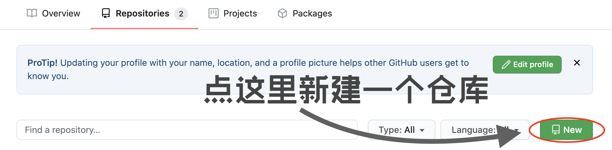

前言
男人的梦想，除了太空之中控制巨大的人形机械对着外星的异形挥舞巨大的冷兵器以外，就是建立一个属于自己的家
啊
我说的是网站
这个笔记系列记录了基于Hexo搭建一个属于自己的Blog流程，在经历了知识鸿沟压制过后的我会尽量将这个流程说的简单易懂，并且加上每一个步骤的原理解释，以免此流程变成了一个用于炫技的装逼文章它好像没有什么鬼技可以炫但是看起来就是一个想装逼但是没有装成的文章
虽然我的编译环境为MacOS，但我会尽量写上更加通用的步骤原理，这样即使你是Windows环境也依然能够跟着流程搭建起自己的网站适当百度也会帮助记忆这个搭建流程
では、ゲームを始めましょう
基本理论
想了一想还是复习一遍网页的构成，这样对我们理解本地文件夹会更加方便一点
https://lyrikp.github.io/categories/note/从零开始建站.htmlhttps: 网站的传输协议为HTTPlyrikp.github.io: 服务器主机的名称是这个，也是你本地文件夹上传到网络上存储的地方/categories/note/: 这个是文件的索引地址，如果你的操作系统是Windows的话，你应该在安装文件时见过这个格式，他们的意思是完全一样的从零开始建站.html: 你实际能看见的网页就是这个文件，也就是说，你现在浏览的东西就是这个文件
现在网页的构建就已经很明晰了，它实际上就是一个上传到云端服务器的你的D:/日语学习资料/三上悠亚/与小动物在野外嬉戏.mp4
在
Hexo中，新建的Blog文章格式为.md的_Markdown_文件，在进行上传的过程中才会被渲染生成.html静态网页文件
而所有的资源也会被存放在某一个集中的文件夹中，通过
categories或者tags索引链接到你的分页面
这些区别之后再说，现在只是方便理解一个网页网址的构成形式
前期准备
就是你需要准备&&下载的东西
- 在Github新建一个仓库
- 安装Node.js
- 安装Hexo
Github建立仓库
通过第一部分的基本理论复习，我们应该很清楚在建站的过程中我们需要一个仓库来存储我们上传的本地文件
这个仓库可以使用Github pages服务搞一个免费的服务器
腾讯云和阿里云也是可以的，不过需要付费，故作为最开始的基础流程，我们不使用国内的服务器
Github对国内访问并不是特别友好，如果可能的话，我还是建议你有一个vpn，以至于不会眼神呆滞地看着加载条到三个月不会画圆圈和认识404
Github相关流程
注册 - 建立仓库 - 配置SSH keys - 成功白嫖到Github pages服务器
先注册Github
没什么好说的
不会有人连注册都不会吧不会吧不会吧
qq邮箱有概率注册失败，所以建议准备一个另外的邮箱备用
起个好听的名字，不会重复的
你的网站名称需要与你的github名称保持一致
我们跳过github前期所有的新手引导，直接进入到建立仓库
在github上建立一个仓库
进入主页
单击处于右上角的头像，在下拉的菜单栏里面选择Your repositories进入到仓库

新建一个仓库

给新建的仓库命名
这里的仓库也是你网站的服务器主机名称
**注意:**这里的名字需要和github名字保持一致，格式为[github_name].github.io

配置SSH keys
SSH keys是什么？
简单来说，github的服务器主机是家，你的本地主机想要进入远端的服务器主机，需要一把钥匙来开门SSH是这个门锁，而这个钥匙就是SSH keys
我们需要Secure Shell(SSH)协议来允许两台电脑进行安全的链接进行数据交换，它是一个网络协议，用来保证数据的保密性和完整性
因此我们需要配置SSH keys来保证本机电脑和github服务器的连接
打开终端/cmd
$ git config --global user.name "你的GitHub用户名"
$ git config --global user.mail "你的GitHub注册邮箱"
$ ssh-keygen -t rsa -C "你的Github注册邮箱" 然后回车几次到配置完成
回车中会出现几行英文，大致意思是要输入加密串，这个东西可以不用配置
这个操作生成了.ssh/id_rsa.pub文件，我们需要其中的内容来配置github
这个文件通常是默认被隐藏的，除了显示隐藏文件的方法，还有以下方法可以打开它
$ cd .ssh/ # 将操作空间移到.ssh/这个文件夹中
$ code id_rsa.pub # 使用VScode打开了这个文件，当然，code这个命令是在VScode配置过的，如果你使用的是atom，那么把code改成atom就成复制内容
在github主页点击头像进入settings

进入侧栏中SSH and GPG keys分页
在其中点击绿色按钮，新建一个SSH key

将刚刚复制的东西粘贴进Key栏title随便填写，自己认得就好
然后点击Add SSH key
运行一下代码检测是否配置完成
$ ssh -T git@GitHub.com认得英文就好啦
安装Node.js
Node.js是一个JavaScript运行环境，网站有它才能够成功编译
重点
接下来有一个套娃的操作，你可以多看几遍理清接下来的逻辑
1、Node.js之中集成了一个名称为npm的下载工具
2、npm的作用是安装卸载Node.js的套件
3、npm的使用方式是终端/cmd中开头为npm的命令
4、npm要用来安装Hexo
5、Node官网有直接下载的安装包，但是使用这个安装包安装Hexo的时候回出现管理权限不足报错
6、我们需要用另一个名叫nvm的下载器安装npm以安装Node.js和Hexo
7、我们需要用curl这个下载器来安装nvm
8、不要下载官网的安装包
就是一种我为了
好了，我们只要记住最后一行加粗的字就行了
Win先下载curl
这个百度就行了MacOS自带这个工具，可以跳过这个步骤
接下来安装nvm
$ curl -o- https://raw.githubsercontent.com/nvm-sh/nvm/v0.34.0/install.sh安装完成后习惯性确认安装
$ command -v nvm安装node.js
npm集成在node.js里，所以这时候我们用nvm安装node.js
$ nvm install node安装完成后习惯性确认安装
$ node -v # 检查node的版本安装Hexo
使用npm命令来安装Hexo
```bash``
$ npm install -g hexo-cli
安装完成后习惯性确认安装
```bash
$ hexo v # 检查Hexo版本结束语
至此，使用Hexo搭建Blog的所有前期准备已经完成
你现在应该完成了如下操作
- 明白了网站URL的组成
- 在
github有了一个用于建站的仓库，并适配了它和自己计算机的SSH keys - 拥有了一个炫酷的下载工具
curl - 安装了
Node.js环境 - 安装好了
Hexo
接下来就是使用Hexo新建一个Blog的文件夹
配置Hexo与github仓库的链接，并将你的本地资源库上传到云端以便你能理解他
让我们移步到下一章